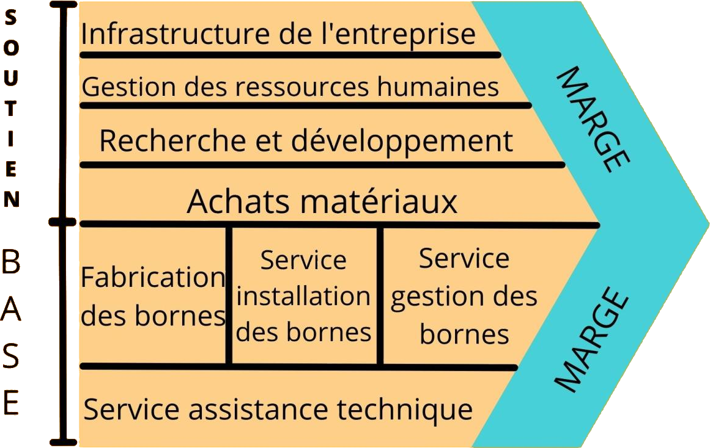

Lancée par Eric Gaigneux, la start-up Ze-Watt est créée en avril 2015.
Ze-Watt est présent sur le marché de l’IRVE* depuis sa création. Elle est composée de 30 collaborateurs et de 4 implantations sur le territoire national. Ze-Watt accompagne ses clients dans leur projet d’installation de bornes de recharge sur l’ensemble du territoire français. Fabricant, Installateur, Superviseur, Mainteneur et Opérateur d’itinérance, Ze-Watt développe en propre tous les métiers de l’IRVE.
La jeune société se charge de la mise en place des bornes de recharge adaptées pour l’intérieur comme pour l’extérieur, sur pied ou murales.
*IRVE : Infrastructure de recharge de véhicules électriques.
L’entreprise est une start-up de type SAS (société par actions simplifiée) dans le secteur de l’environnement et des énergies renouvelables.
Elle adopte le modèle de production en propre en produisant elle-même les bornes de recharges pour ensuite les installer chez les clients avec les équipes de techniciens. Des services de gestion et de maintenance des bornes sont aussi proposés par l’entreprise.
Ze-Watt réalise un chiffre d'affaires de 800.000 euros en 2017.
Elle réalise la même année un tour de table d'un million d'euros auprès de MP Croissance, Takara Capital, Crédit Agricole Toulouse 31 Initiatives et Bpifrance.
Ce financement lui permet de financer son développement, d'étendre son concept et de renforcer son équipe commerciale.
Ze-Watt achète des matériaux pour produire des bornes de recharge pour véhicules électriques, ses équipes techniques se chargent de l’installation et de la maintenance et les équipes IT développent des solutions logicielles et se chargent du service de gestion des bornes.

L’entreprise agit dans un domaine innovant, ce qui peut être source de problème pour certains au niveau de l’approvisionnement de produits pour la revente ou l’installation, mais ce problème n’est pas présent chez Ze-Watt car ils se chargent de la production en interne, cela engendre donc une plus grande autonomie au coût d’un manque de diversification.
Ze-Watt possède de nombreux partenariats avec de grandes entreprises provenant de divers domaines telles que Airbus, Safran, Mitsubishi, Orange, L’Oréal, etc… , ce qui, en combinaison avec leur service payant de gestion des bornes après installation, leur confère une bonne stabilité économique.